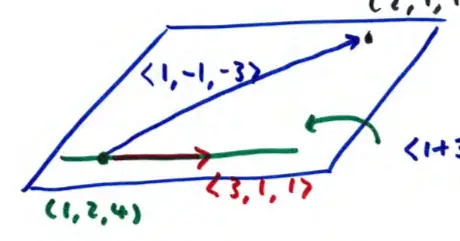

Finding the Equation of a Plane
Find an equation of the plane that contains the point \((2, 1, 1)\) and the line
\[ x = 1 + 3t, \quad y = 2 + t, \quad z = 4 + t \]
Multiple Choice Options
- A. \(3x + y + z = 8\)
- B. \(2x + y + z = 6\)
- C. \(x + 2y + 4z = 8\)
- D. \(x - 5y + 2z = -1\) (Selected)
- E. \(x - 2y + z = 1\)
Plane Equation Definition
\[ \text{plane: } \vec{n} \cdot \langle x - x_0, y - y_0, z - z_0 \rangle = 0 \]
- \(\vec{n}\) is the normal vector.
- \(\langle x - x_0, y - y_0, z - z_0 \rangle\) is a vector in the plane.
- \((x_0, y_0, z_0)\) is a point in the plane.
Visualizing the Plane and Line
To find the equation, we identify points and vectors from the given information. The point \((2, 1, 1)\) is in the plane. From the line equation, we can extract a point and a direction vector.
\[ \langle 1 + 3t, 2 + t, 4 + t \rangle = \langle 1, 2, 4 \rangle + t \langle 3, 1, 1 \rangle \]
- One point on the line: \((1, 2, 4)\)
- Direction vector: \(\langle 3, 1, 1 \rangle\)

Determining Vectors in the Plane
We need two vectors in the plane to find the normal vector:
- \(\vec{u} = \langle 2-1, 1-2, 1-4 \rangle = \langle 1, -1, -3 \rangle\)
- \(\vec{v} = \langle 3, 1, 1 \rangle\) (the direction vector of the line)
The normal vector \(\vec{n}\) is found by the cross product:
\[ \vec{n} = \vec{u} \times \vec{v} \quad \text{or} \quad \vec{v} \times \vec{u} \]